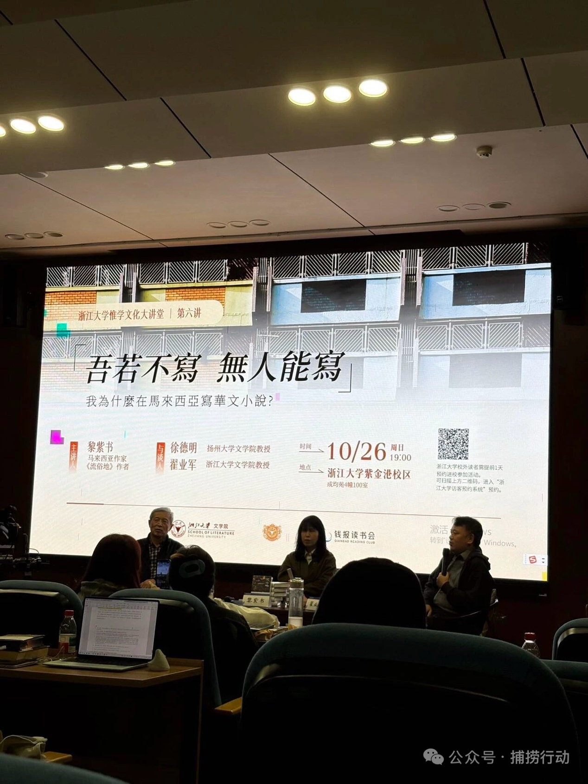
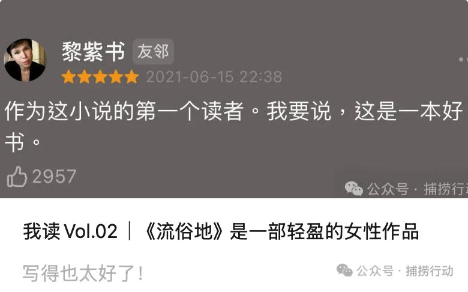
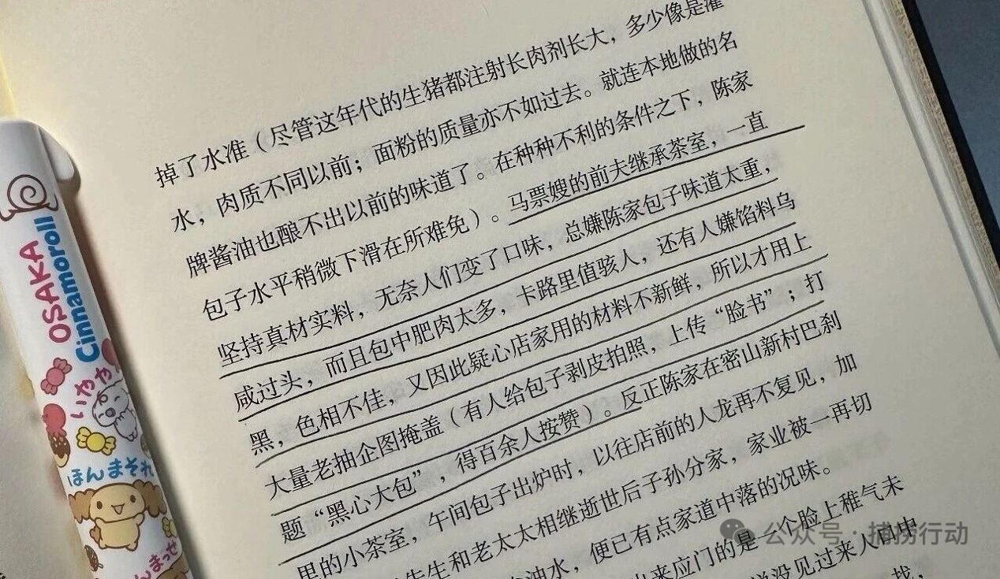

黎紫书说：“最讨厌那些书没看完就给我打一星的人。”
记录黎紫书围绕《流俗地》的现场分享，关注人物塑造、叙事选择与马华文学的日常经验。
全文阅读

Q：为什么写盲女银霞？（提到其他一些写盲人的作品如毕飞宇的《推拿》等）
黎紫书：银霞是一个完全虚构的人物。我不是要写盲人的命运，而是借助她的视角来描述马来西亚的华人社会，我不要探讨盲人群体本身。用她来连接小说。整个小说只有银霞是完全虚构、没有原型的。朋友说银霞很像我，所以没有“完全虚构”。但自己写的时候意识不到。作为在怡保长大的女性，但无意识投射了自己的感受到银霞身上。
黎紫书：我也一直把自己当俗人看待。在怡保请装修工人吃海底捞，记者魂发作，开始和他们聊天。/每一人物都很喜欢。最在乎的是细辉，他是最接近我们的人。很平庸。
Q：为什么让银霞拥有了顾有光？这样的结局会不会太圆满？
黎紫书：这圆满吗？豆瓣上很多人都说不好让她嫁给了一个老头子。男性女性视角还是不一样。银霞对于伴侣的判断本来就和我们不一样。银霞年轻的时候就在盲人院里被性侵，从来没跟拉祖和细辉这样的朋友说过，但却对顾有光说了。我自己的理解，觉得银霞要跟他们较劲，觉得自己在拉祖和细辉心里是美好的形象，如果要告诉他们，在那样的社会里，两个男性朋友会怎么看待她呢。但很多年后对一个很年长的人，在黑暗当中，她觉得大家是平等的，我如果说出，你应该会知道。她不怕破坏自己在顾老师心中的形象这个事情。这是我代入银霞的视角觉得这样是可信的。因为如果是我，我不会对拉祖和细辉说。
（关于顾有光的名字，有特殊含义吗？例如顾是照顾，有光暗指照进盲女银霞生命中的光等；包括为什么安排顾有光在一个特定的时间节点说出自己的名字）
黎紫书：顾有光这个名字在马来西亚不算很特别，起这个名字并不想强调他对银霞的拯救。当然我对他叫什么在哪里出现是有安排，但我没有让他拯救的意思。我不觉得她四十多岁遇到一个伴侣不是拯救，不能说银霞拯救了顾有光吗？我也没有觉得这个结局有多圆满。让你觉得圆满其实只是结局停在了这个地方，现实中马来西亚选举之后没有变好，银霞嫁给了他也不一定就能白头偕老。我选择让它停在这个地方只是为了让读者感受到希望。这个是小说作者的选择。我可以把结局写得很悲惨。但我想让读者感到一点希望。我没有觉得这是一个特别好的结局，但是是一个对读者充满了祝福的一个结局。
Q：（关于“第三世界国家作者写作都是国族寓言”）为什么命名“流俗地”（这个可能有点不好的名字）？为什么写一个非国族寓言的、而是很细碎的故事？
黎紫书：流俗并非贬义，这个名字有什么不好？（此处省略了一些，大概就是她之前也提到过的说法，流是水，地是土，俗是人和谷，她用这个名字来写自己出生地的故事。还提到之前有人让她改，但她觉得自己也卖不出几本就没改。）
黎紫书：过去我摸索出了一套得奖体小说的写法。我也是文学奖出身，在马来西亚这个没办法。
那我只能去研究得奖作品怎么写的，结构大概怎么样，文笔怎么样。最主要的是要看评审的会议记录。我就只能去看评审对这种作品的想象，评审就爱看野猪等意向，如果要再深刻点你就要加一点中国性，中国人在马来西亚的身份认同，这就差不多了。你要怎么把这些炒成一碟弄得好，这也是很考验作者的。我研究出这一套模式，这也是无往不利的。
这造出的危险就是大家一提到马华文学，就是这样想的，就想看到马来华人凄风苦雨身份危机之类。当然我也是促成这个现象的一份子。
后来我就不想这样。正好我也不用再参加文学奖，不用顾及评审大哥大姐怎么想。我想说马华文学根本不只有野猪鳄鱼猴子香蕉林，我生活的马来西亚不是这样的！
这样子的文学（只非常注重描绘东南亚“潮湿”意象的作品）是课堂的文学，标本式的文学，离开课堂了是没有生命力的。我渴望写出有生命力的作品，我写出的第一个交出来的作品就是《流俗地》。我写的时候就知道我的马华文学同行一定不赞成不欣赏，但我本来叫流俗地就要俗到底，不在乎他们怎么想。过去关注马华文学的学者一定很痛苦，这个文本已经脱离了他们原来研究马华文学的框架。我想象那些学者痛苦，我就很开心！我们作者应该走在学者前面而不是后面。
Q：关于写法，小说叙事，不同章节如何关联？
黎紫书：我没期待自己的书能够大卖，我只希望这本书能落到真正属于他们的读者手上。其实这个书每一个符号我都设计过（“心机”），但又想减低痕迹的存在感，但怕没有痕迹又怕读者看不出来我费心设计。
我胆敢这样子开始这个小说。（插入：以前是写诗的，但我太注重逻辑性了，发现自己不是写诗的料。）这个小说开始第一句，我就知道我要怎么交代大辉的故事，他这些年去了哪里。可是小说有自己的生命，故事会自己跑起来。小说故事发展到最后，故事里没人关心大辉去了哪，所以我没办法运用自己的小说家之手来写。我没有交代他去了哪里，这个是小说自己的选择。故事里没人在意。会怀疑自己这样处理对吗？我有更好的解释的方法，可是我不想。这个时候小说有自己的意志了，我只是顺从，这个时候我才觉得自己是个真正的小说家。
Q：顾有光名字的出现故意为之，为什么这么安排？
黎紫书：顾老师第一次出现的时候我就想把他安排成银霞的伴侣。为了要制造这个效果，但我一直不说他的名字。
我一直会拜访一个中学老师，但后来我有一次去拜访他，发现他已经忘性很大，他总是会反复问一些问题。然后写到马票嫂有这些情况的时候，让顾有光喊出他的名字，让这个光有更大更远的向度和辐射性，我等到他要出门马票嫂可以再问他一次的时候。我知道这个时机来了，又要有一种画面感和声音感。
Q：如何做到尊重故事的意愿，让它自己跑起来，而小说家本人不过多干涉？
黎紫书：我的存在是为了小说。我坐在那里写作的时候，是因为有小说才有我，小说是大于我的。
Q：应该要买哪个版本的流俗地？
黎紫书：那要看你是一个什么层次的读者了。推荐马来西亚版本。台湾版本封面很好看，但我的观点是这个版本的封面做什么书的封面都可以，好看但和我的书没什么关系。校对做得差，错字比较多。
最后，“如果你是最高级的读者，你可能想要收集全套。”
对谈会以黎紫书女士突如其来的一句幽默话语轻飘飘的结束。我还是没有改变我对《流俗地》和她这个人的看法，那就是“轻盈”。

她说她从来认为自己就是个俗人。在台上两位学者在聊这本书在文学界的地位、和其他作品如何关照、介绍自己的研究论文，试图从汪曾祺、老舍、王安忆聊到水浒、红楼时，她只是很认真地分享自己创作的历程，如何想到让银霞向顾老师坦白自己的经历、如何安排顾老师说出自己名字的时间节点，再说到自己如何看到豆瓣上读者给的评价才发现很多读者都觉得自己把拉祖写的很有“神性”，而她确实从来没这么想过，又很认真的问提问的同学最后有没有把书看完，因为她“最讨厌那些书没看完就给我打一星的人”，再分享自己曾经在怡保做记者、如何在怡保找到非常好的装修工人并请他们吃海底捞......
和她创作《流俗地》的初衷一样，她不再希望关注被放进课本里面、被限制在某种意象框架里的沉重的马华文学，而写出《流俗地》这样的关注日常、关注真切的那片土地上的人的作品，在她说话时，她没有关注那些文学的概念和教条，而是也像这样分享一些琐碎的、但说出来非常能够有助于读者理解这部作品的内容，并不时出现一些幽默金句。我终于知道了原来我和作者一样，觉得结局算一个开放而非大团圆的结局，我知道了顾老师这个角色的设计其实有这么多考量，我也知道这本看上去写的行云流水的书其实她也耗费了一番心思去设计、排布，又怕自己设计的明显，又怕太不明显了读者看不出来。
有同学问南乳包好不好吃，她说南乳包肯定是好吃的，又随即说到她之前带一个作家去怡保吃南乳包，但发现现在很多摊主都不卖了，因为里面一大块肥肉已经不符合现代人的口味。我立刻想到她在书中写的这一段：
